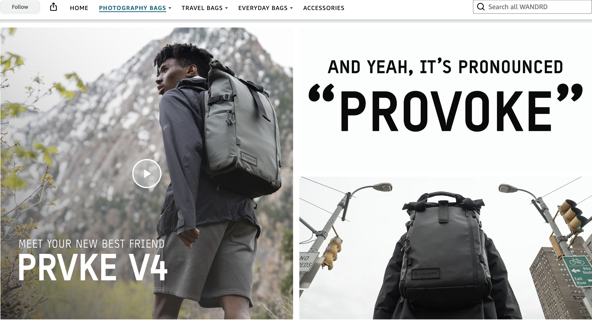

01 / 03
Home Page Architecture
The primary landing portal leading with category tiles to direct travelers and photographers quickly toward their specific carry volume.
 Index
Index

Amazon Store Strategy & Product Graphic Systems · 2025
WANDRD designs versatile travel gear and camera bags for creatives. This project focused on structuring their comprehensive Amazon Brand Store into an intuitive, high-conversion visual ecosystem.
Amazon's rigid layout modules often dilute distinctive brand identities. The goal was to overcome these grid limitations through custom lifestyle tiles, bold typographic callouts, and tailored infographics that feel authentic to WANDRD.
The primary landing portal leading with category tiles to direct travelers and photographers quickly toward their specific carry volume.

Pairs moody lifestyle field imagery with high-contrast callouts to highlight the expandable roll-top and dedicated quick-draw camera access.

A high-capacity backpacking layout structured around adventure storytelling—balancing terrain scale, carrying comfort, and technical specs.

Operating within Amazon's strict template limits required precision. Every modular banner was engineered to scale seamlessly between desktop browsers and the Amazon mobile app without losing legibility.